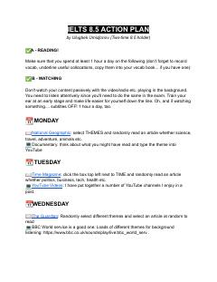

I8IELTS imtihonidan 8.5 ball olish uchun amaliy kunlik harakat rejasi.
Ushbu qo'llanma ikki karra 8.5 ball sohibi Ulugbek Umidjonov tomonidan IELTS imtihoniga tayyorgarlik ko'rish uchun maxsus tuzilgan kunlik tartib va harakat rejasini o'z ichiga oladi. Kitobda o'qish, tinglash va til ko'nikmalarini oshirish bo'yicha amaliy tavsiyalar berilgan. U o'quvchilarga imtihonda yuqori natijaga erishish uchun samarali usullarni o'rgatadi.